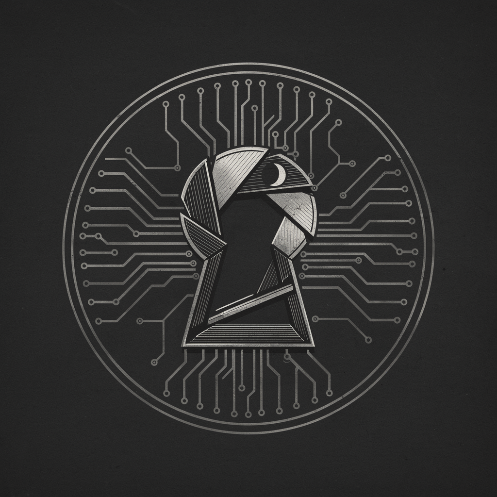

対面のプレイヤーを、記録者が見届ける。
この名前が、他のプレイヤーに表示されます。
推奨構成(8人時): 人狼2 / 予言者1 / 騎士団1 / 市民4
記録者が、全員の準備を確かめています。
長押ししている間だけ、役職が表示されます。
指を離すと、ただちに元の状態に戻ります。
まもなく夜が訪れます。端末を伏せ、静かに目を閉じてください。
記録網が夜を記録しています。
夜が明けました。
議論して、人狼を推理してください。
得票数が同数のため、決選投票を行います。
対象: 沙耶 / アキラ
評決が下されました。
人狼をすべて追放しました。
同じ顔ぶれで、もう一度記録を始めますか。
夜、特別な役職を持つプレイヤーは一人を選んで行動します。
昼、生存者全員で議論し、疑わしい一人に投票します。
人狼をすべて追放すれば市民陣営の勝利、生存者の均衡が崩れれば人狼陣営の勝利です。
現在の記録は失われます。よろしいですか。
確定すると、あとから変更できません。